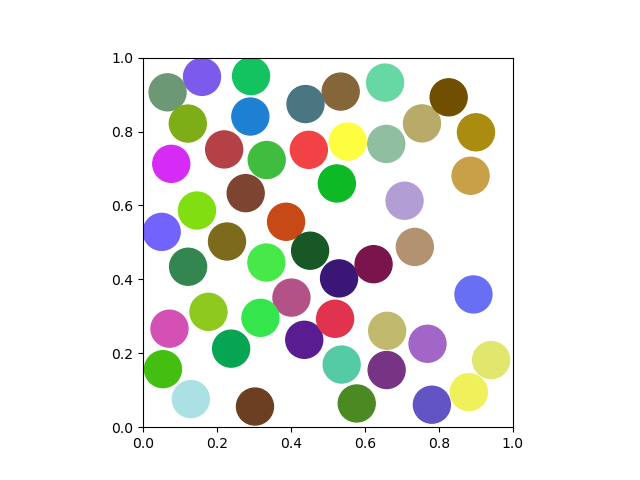
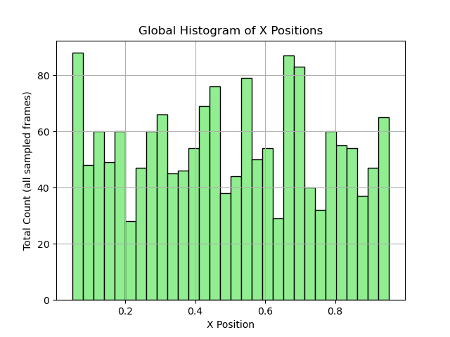

Ejemplo de Uso: Simulación de Colisiones de Discos
Ejecución del proyecto
Para iniciar la simulación, ejecute el archivo main.py en su editor de codigo de preferencia o directamente en la terminal de bash despues de visualizar la simulacion de los discos cierrela e inmediatamente se mostrará el histograma de posiciones en el eje x.
Esto lanzará una simulación con parametros predeterminados mostrando: - Ventana con animación de discos en movimiento - Histograma de distribución sobre el eje X
Parámetros modificables
En main.py se pueden ajustar los siguientes valores para experimentar diferentes simulaciones:
# Configuración principal (líneas 10-13)
cantidad_discos = 50 # Valores recomendados: 5-100
radio_disco = 0.05 # Debe ser < 0.5 por los márgenes de la caja
dt = 0.01 # Paso temporal
frames = 500 # Duración de simulación (línea 75)
Ejemplo práctico:
cantidad_discos = 50
radio_disco = 0.05
Comportamiento esperado
 